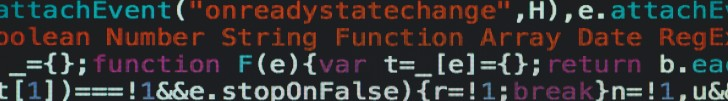

Mini projet
D'une liste d'urls à un fichier html fonctionnel
Step by step
récupérer des urls et les enregistrer dans un .txt
écrire un script bash pour lire les urls
ouvrir les urls avec curl
extraire les retours serveur et les encodages
renvoyer ces informations sous forme de données tabulées
écrire un script bash pour transformer les données tabulées en tableau htlm
génerer un site sur github à partir d'un document html
faire du tableau html une page secondaire liée à la page d'accueil du site
tableau html